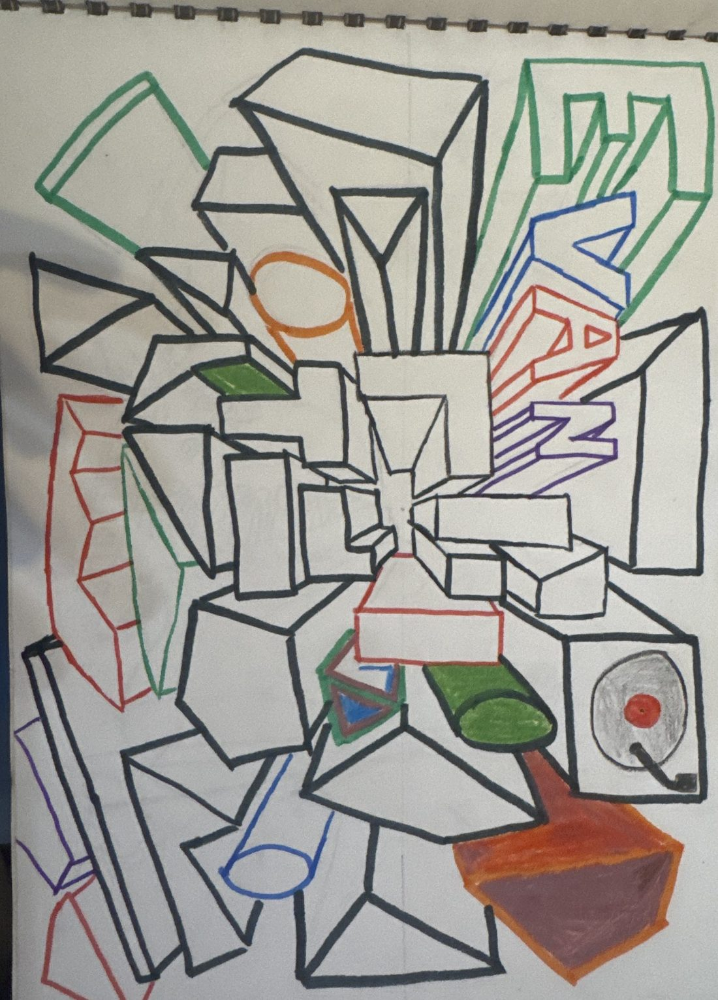

2D Design · One-Point Perspective · Grades 5–12 · 45 minutes
Perspective City
Draw shapes flat on the plan. Each one rises into a skyscraper, and every edge races toward one vanishing point.
1 · Plan draw footprints here
How one point makes a whole city

Imagine hovering in a helicopter straight above the city. Every vertical edge of every building points at your eye, so in the drawing they all aim at one spot: the vanishing point (VP), the point on the ground right under you. The lines that run toward it are called orthogonals.
A roof is parallel to the paper, so it keeps its true shape. It only gets bigger, because it is closer to you. How much bigger? If your eye is D above the ground and a roof is h high, the roof is drawn D ÷ (D − h) times as far from the VP as its footprint. That is similar triangles, and it is the exact rule the sketch view uses.
- Taller leans farther. A tower of height 22 under a camera at 44 is drawn twice as far from the VP as its base.
- Lower camera, wilder city. Bring the camera down and D − h shrinks fast: walls stretch like a fisheye.
- Hidden walls. You only see a wall when the VP is on its outside. A tower right under the VP shows only its roof.
- Setbacks. New York's 1916 Zoning Resolution made tall buildings step back as they rose so light could reach the street, giving the city its "wedding cake" towers. Try the Setbacks menu.
Filippo Brunelleschi showed linear perspective with a painted panel of the Florence Baptistery around 1415, and Leon Battista Alberti wrote the method down in 1435. Raphael built The School of Athens on a single vanishing point; Picasso later broke the rule on purpose.
Four experiments
- Drag the VP (the orange target) into a corner. Which walls appear, and which disappear? Write the rule in your own words.
- Two equal towers. Stamp two identical boxes, one near the VP and one near the edge. Why does the far one show more wall?
- Camera height. Set it to 26, then 120. Which looks like a fisheye lens, and which looks almost like a flat map?
- Letters as buildings. Type your initials in the Letters tool and stamp them. Holes in A, B, O and R become courtyards.
Now draw it by hand
- Draw your footprints flat, scattered around the page. Leave the middle mostly open.
- Mark one dot near the centre: the VP.
- With a ruler and a light pencil, draw an orthogonal from every corner toward the VP.
- Choose how tall each building is: draw a smaller copy of its shape on those lines, closer to the VP. Keep its edges parallel to the original.
- Erase the lines hidden behind nearer buildings, ink the rest with marker, then colour a few faces. Turn the page upside down: is it now a worm's-eye view, looking up?
Tip: in the studio, turn on Construction lines, press Download PNG, and print it as a tracing guide.
Reflection
Finish when: your city has at least eight towers, including one letter and one setback tower; you have saved a PNG from two different vanishing points; and your hand drawing uses one VP for every orthogonal.
For younger designers: use Stamp and Random, then just drag the VP and describe what changes. Extend: place the VP outside the plan entirely. What happens to a city seen from off to one side?